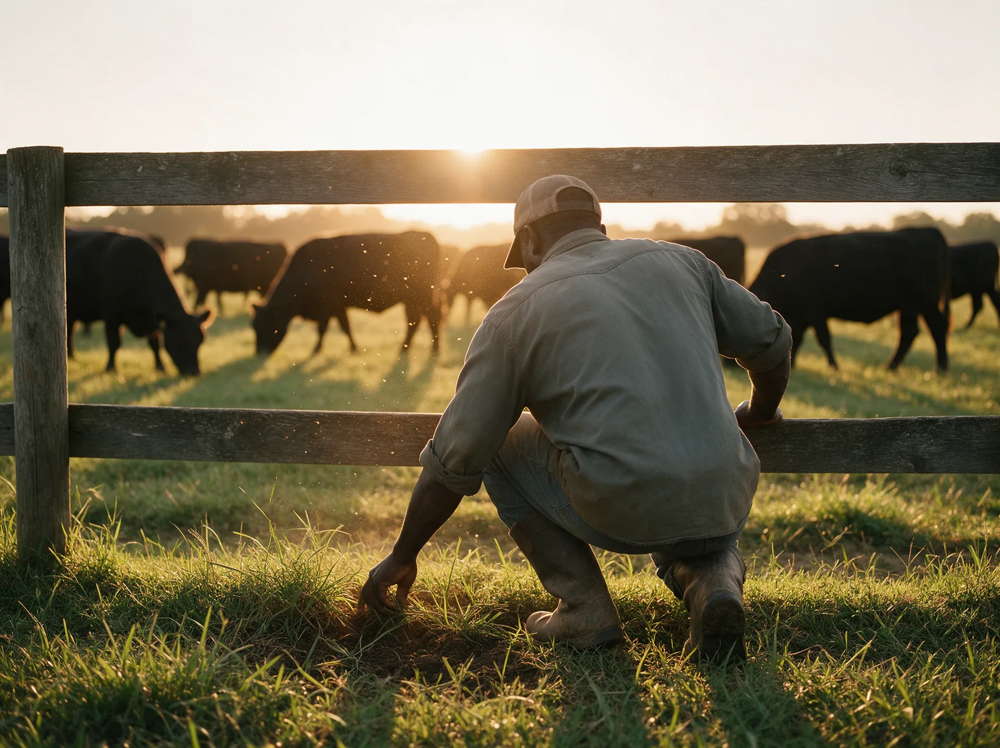
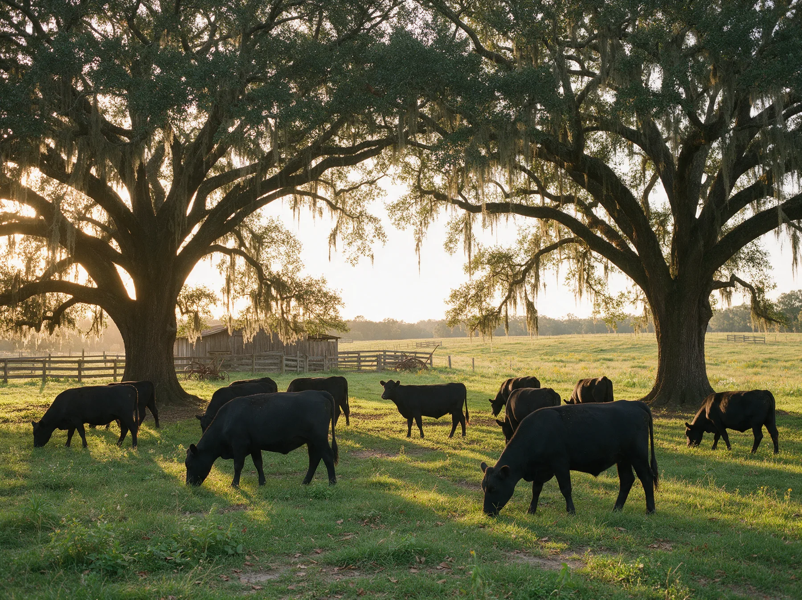
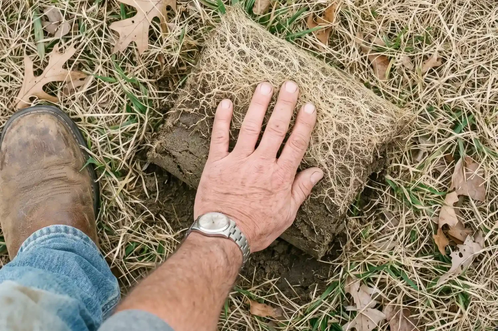
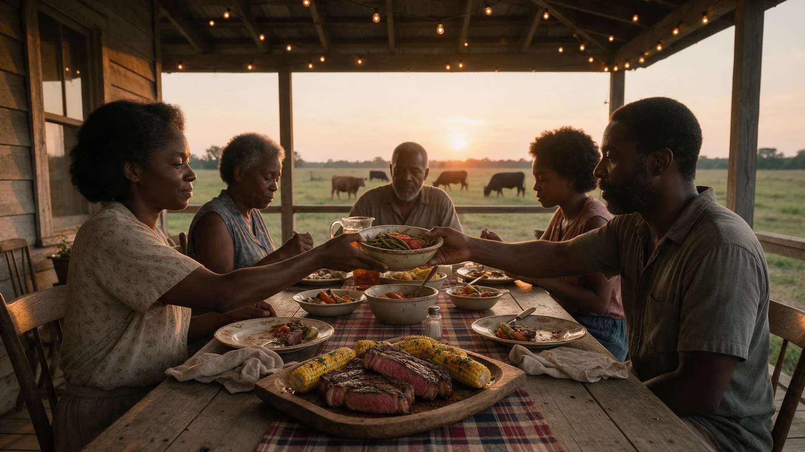

Our story
Rooted in legacy. Raised with purpose.
For five generations, our family has been proud to call this land home, and every animal we raise carries that name forward.
A family legacy
Raised on the land, generation after generation
For five generations, our family has woken up to the same calling: to care for the land, raise good cattle, and carry on a way of life handed down by those who came before us. Farming is our livelihood, our legacy, and our responsibility, passed from one generation to the next.
Our story began generations ago with family members who worked hard, believed in doing things the right way, and understood that land is not something you simply own. You care for it, protect it, and pass it on. Today we carry that same responsibility.
We give our cattle the care, space, and natural environment they deserve. Our beef is grass-fed from start to finish and raised without added hormones, steroids, preservatives, or GMOs, because we believe in knowing exactly what we raise and being proud of what we put on our own family's table.


More than beef
A partnership with the land
For us, this work is about more than beef. It is the early mornings and long days. It is watching the seasons change across the fields, and knowing the same land our family worked generations ago is still part of our lives today.
It is the lessons our grandparents taught our parents, the lessons our parents taught us, and the hope that we will pass those same values on to the next generation. We have learned that farming is a partnership: with the land, with the animals, and with the people who depend on us to do our part.
We take great pride in our cattle and in the land they call home, and we do not take that responsibility lightly.
Five generations of farming. One enduring commitment to quality.
A name we stand behind
Still here, still working
Every animal we raise carries a piece of our family's name and our family's story. Every pasture reminds us of those who came before us, and every generation reminds us that what we do today matters for those who will come after us.
Five generations later, we are still here: working the land, caring for our cattle, and doing our best to honor the legacy we have been given.
We are proud of where we come from and what we raise, and we are proud to share a little piece of our family, our farm, and our legacy with you.

What we stand for
Grass-fedstart to finish
No addedhormones or steroids
No preservativesor GMOs
USDAcertified
When you buy beef from our family farm, you are buying into five generations of hard work, stewardship, and pride in what we raise.